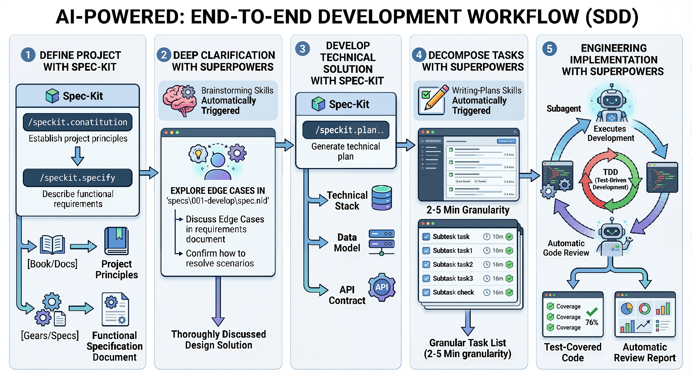
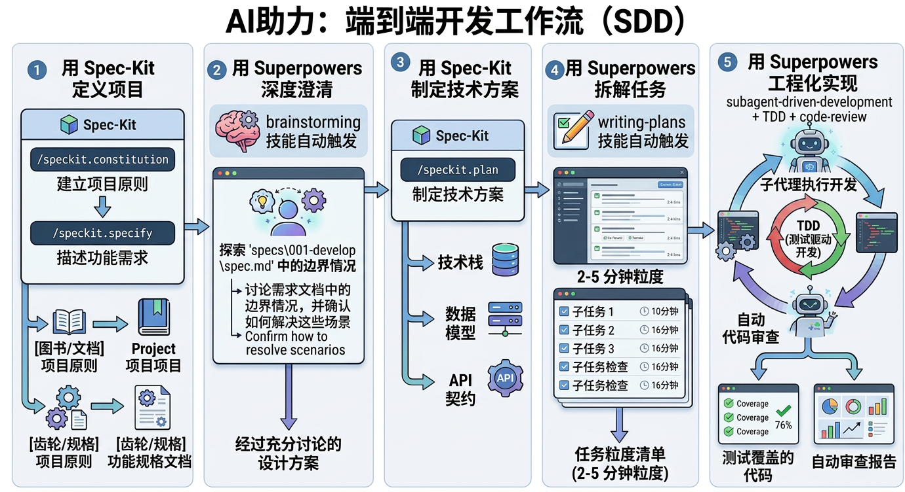

Specification-Driven Development with Superpowers
Superpowers Bridge is a spec-kit extension that integrates obra/superpowers agent capabilities into the spec-kit development workflow. It works with any spec-kit compatible coding agent, including Claude Code, Codex CLI and others.
Spec-kit provides the document structure and governance (constitution, specifications, plans, tasks). Superpowers provides deep clarification (brainstorming), intelligent task decomposition (writing-plans), and engineering execution discipline (TDD, subagent-driven development, code review).

The workflow orchestrates 6 phases — from project definition through engineering implementation — with spec-kit handling governance artifacts and superpowers providing intelligent clarification, decomposition, and execution capabilities.
specify extension add superspec# Clone the repository
git clone https://github.com/WangX0111/superspec.git
# Install via spec-kit from local path
specify extension add ./superspec --devIf you’re using a coding CLI agent (Claude Code, Codex CLI, etc.) and want to use this as a skill rather than a spec-kit extension, symlink it:
# Claude Code
ln -sf "$(pwd)/superspec" ~/.claude/skills/superspec
# Codex CLI
ln -sf "$(pwd)/superspec" ~/.codex/skills/superspec
# Other agents (common convention)
ln -sf "$(pwd)/superspec" ~/.agents/skills/superspecSuperpowers Bridge works standalone, but for enhanced capabilities install superpowers skills:
# Install obra/superpowers (see their repo for latest instructions)
# Skills should be placed in ~/.agents/skills/ or .agents/skills/| Command | Description |
|---|---|
/speckit.superspec.status |
Show current progress and suggest next step |
/speckit.superspec.brainstorm |
Deep-dive edge cases and refine a spec document |
/speckit.superspec.tasks |
Generate phased task breakdown with execution markers |
/speckit.superspec.execute |
Orchestrate implementation with TDD + subagents |
/speckit.superspec.review |
Run code review against spec requirements |
Note: This extension adds 5 commands on top of the core spec-kit commands (
/speckit.constitution,/speckit.specify,/speckit.plan,/speckit.tasks,/speckit.checklist). The core commands are provided by spec-kit itself.
All project state is persisted as plain-text markdown and YAML files
— under .specify/memory/ for governance
(constitution.md) and under specs/NNN-*/ for
per-feature state (spec.md, plan.md,
tasks.md, progress.yml). When a session is
interrupted — agent timeout, user leaves, CLI crash — no progress is
lost. Run /speckit.superspec.status in a new session to see
exactly where you left off:
Superspec Project Status
========================
Constitution: Done
Features:
001-user-auth [####------] execute (Phase 5/6) — 11/19 tasks done
002-photo-upload [##--------] brainstorm (Phase 2/6) — 2 open questions
Suggested next step: /speckit.superspec.execute 001Each command automatically detects previous progress and resumes from the interruption point — skipping completed work, continuing from open questions or unchecked tasks.
/speckit.constitution MyProjectThis creates the .specify/ directory structure and
interviews you about core principles, technology stack, and quality
gates.
/speckit.specify "User authentication with email and password"This creates a feature specification at
specs/001-user-authentication/spec.md with user stories,
requirements, and success criteria.
/speckit.superspec.brainstorm specs/001-user-authentication/spec.mdThe agent asks probing questions one at a time to discover boundary conditions, error scenarios, security concerns, and UX pitfalls you may not have considered.
/speckit.plan # Create technical implementation plan
/speckit.superspec.tasks # Generate task breakdown with execution markers
/speckit.superspec.execute # Implement with TDD discipline and checkpoints
/speckit.superspec.review # Verify implementation against specTo see what spec-kit + superspec actually produces after a complete
run, browse the examples/static-landing-page/
snapshot — the verbatim disk output from a real Claude Code session
driven through all 7 stages (constitution → specify → brainstorm → plan
→ tasks → execute → review).
Open examples/static-landing-page/web/index.html
in any browser to view the AI-generated landing page directly. The
accompanying snapshot
README explains how the artifacts were produced and how to reproduce
them via scripts/e2e-agent-claude.sh.
After initialization, your project will contain two top-level
directories created by spec-kit — .specify/ for tool
metadata and specs/ for feature artifacts:
your-project/
├── .specify/
│ ├── memory/
│ │ └── constitution.md # Project governance principles
│ ├── superpowers.yml # Superpowers detection status (auto-managed)
│ └── templates/ # Document templates
├── specs/
│ └── 001-feature-name/
│ ├── spec.md # Feature specification
│ ├── plan.md # Implementation plan
│ ├── tasks.md # Task breakdown
│ ├── progress.yml # Phase progress tracker (auto-managed)
│ └── checklist-*.md # Generated checklists
└── ... (your source code)Constitution → Specify → Brainstorm → Plan → Tasks → Execute → Review
↑ ↓
└─────┘ (iterate until spec is solid)Each phase has an explicit gate — prerequisites are verified before proceeding. Human checkpoints ensure you control when to advance.
When obra/superpowers skills are installed, superspec automatically detects and uses them:
| Superspec Command | Enhanced By | Fallback |
|---|---|---|
brainstorm |
brainstorming skill |
Built-in questioning protocol |
tasks |
writing-plans skill |
Template-based decomposition |
execute |
executing-plans +
subagent-driven-development +
test-driven-development |
Sequential execution with manual confirmation |
review |
requesting-code-review skill |
Built-in review checklist |
See superpowers-bridge.md for full integration details.
To submit this extension to the spec-kit community catalog:
github/spec-kit
repositoryextensions/catalog.community.json:{
"id": "superpowers",
"name": "Superpowers Bridge",
"version": "1.0.0",
"description": "Bridges spec-kit with obra/superpowers capabilities (brainstorming, writing-plans, TDD, subagent-driven-development, code-review)",
"author": "Superspec Contributors",
"repository": "https://github.com/WangX0111/superspec",
"verified": false,
"tags": ["superpowers", "brainstorming", "tdd", "code-review", "subagent", "workflow"]
}README.mdSee the full Extension Publishing Guide for details.
MIT
规格驱动开发 + 超级能力
Superpowers Bridge 是一个 spec-kit 扩展，将 obra/superpowers 代理能力集成到 spec-kit 开发工作流中。它兼容所有支持 spec-kit 的编程代理，包括 Claude Code、 Codex CLI 等。
Spec-kit 提供文档结构和治理（宪章、规格、计划、任务）。 Superpowers 提供深度澄清（头脑风暴）、智能任务拆解（计划编写）和工程执行纪律（TDD、子代理驱动开发、代码审查）。

工作流编排 6 个阶段——从项目定义到工程实现——spec-kit 负责治理文档，superpowers 提供智能澄清、任务拆解和执行能力。
specify extension add superspec# 克隆仓库
git clone https://github.com/WangX0111/superspec.git
# 从本地路径安装
specify extension add ./superspec --dev如果你使用 Claude Code、Codex CLI 等，希望将其作为技能而非 spec-kit 扩展使用：
# Claude Code
ln -sf "$(pwd)/superspec" ~/.claude/skills/superspec
# Codex CLI
ln -sf "$(pwd)/superspec" ~/.codex/skills/superspec
# 其他代理（通用约定）
ln -sf "$(pwd)/superspec" ~/.agents/skills/superspecSuperpowers Bridge 可以独立工作，但安装 superpowers 技能可获得增强能力：
# 安装 obra/superpowers（具体方式请参见其仓库）
# 技能应放置在 ~/.agents/skills/ 或 .agents/skills/| 命令 | 说明 |
|---|---|
/speckit.superspec.status |
显示当前进度并建议下一步操作 |
/speckit.superspec.brainstorm |
深入探索边界情况，完善规格文档 |
/speckit.superspec.tasks |
生成分阶段任务清单（含执行标记） |
/speckit.superspec.execute |
以 TDD + 子代理编排方式执行实现 |
/speckit.superspec.review |
对照规格进行代码审查 |
注意：此扩展在 spec-kit 核心命令（
/speckit.constitution、/speckit.specify、/speckit.plan、/speckit.tasks、/speckit.checklist）基础上增加 5 个命令。 核心命令由 spec-kit 自身提供。
所有项目状态以纯文本（Markdown + YAML）持久化——治理资产（宪章）在
.specify/memory/ 下，
每个功能的状态（规格、计划、任务、进度）在 specs/NNN-*/
下。 会话中断时——代理超时、用户离开、CLI 崩溃——不会丢失任何进度。
在新会话中运行 /speckit.superspec.status
即可查看中断点：
Superspec 项目状态
==================
宪章: 已完成
Superpowers: brainstorming (已检测), writing-plans (未安装)
功能:
001-user-auth [####------] 执行中 (阶段 5/6) — 11/19 任务完成
002-photo-upload [##--------] 头脑风暴 (阶段 2/6) — 2 个待解决问题
建议下一步: /speckit.superspec.execute 001每个命令会自动检测之前的进度并从中断点恢复——跳过已完成的工作，从未解决的问题或未完成的任务继续。
/speckit.constitution 我的项目创建 .specify/
目录结构，并引导你定义核心原则、技术栈和质量门禁。
/speckit.specify "用户邮箱密码登录认证"在 specs/001-user-authentication/spec.md
创建功能规格，包含用户故事、需求和成功标准。
/speckit.superspec.brainstorm specs/001-user-authentication/spec.md代理逐个提出探索性问题，发现你可能没有想到的边界条件、错误场景、安全隐患和用户体验陷阱。
/speckit.plan # 创建技术实现方案
/speckit.superspec.tasks # 生成任务拆解（含执行标记）
/speckit.superspec.execute # 以 TDD 纪律和检查点方式实现
/speckit.superspec.review # 对照规格验证实现想看 spec-kit + superspec 实际跑完一遍的成果？查看 examples/static-landing-page/
—— 这是一次真实 Claude Code 会话完整走完 7 阶段（宪章 → 规格 → 头脑风暴
→ 计划 → 任务 → 执行 → 审查）后落到磁盘上的所有产物原样副本。
直接用浏览器打开 examples/static-landing-page/web/index.html
即可看到 AI 生成的落地页。配套 样例 README
详细说明了产生过程， 以及如何用 scripts/e2e-agent-claude.sh
复现这次快照。
宪章 → 规格 → 头脑风暴 → 计划 → 任务 → 执行 → 审查
↑ ↓
└─────┘（反复迭代直到规格完善）每个阶段都有明确的门禁——在推进前验证前置条件。人工检查点确保你控制推进节奏。
当安装了 obra/superpowers 技能时，Superpowers Bridge 会自动检测并使用：
| 命令 | 增强来源 | 降级方案 |
|---|---|---|
brainstorm |
brainstorming 技能 |
内置提问协议 |
tasks |
writing-plans 技能 |
基于模板的拆解 |
execute |
executing-plans +
subagent-driven-development +
test-driven-development |
顺序执行+手动确认 |
review |
requesting-code-review 技能 |
内置审查清单 |
要将此扩展提交到 spec-kit 社区目录：
github/spec-kit 仓库extensions/catalog.community.jsonREADME.md
的社区扩展表详见 扩展发布指南。
MIT